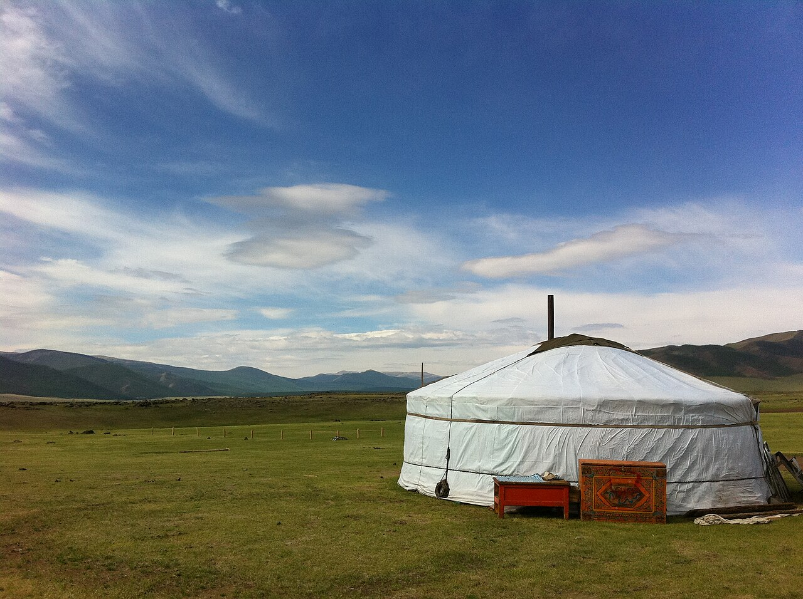
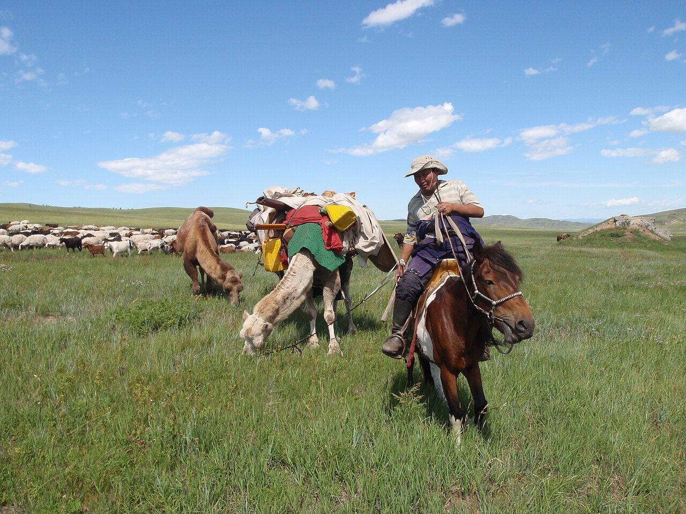
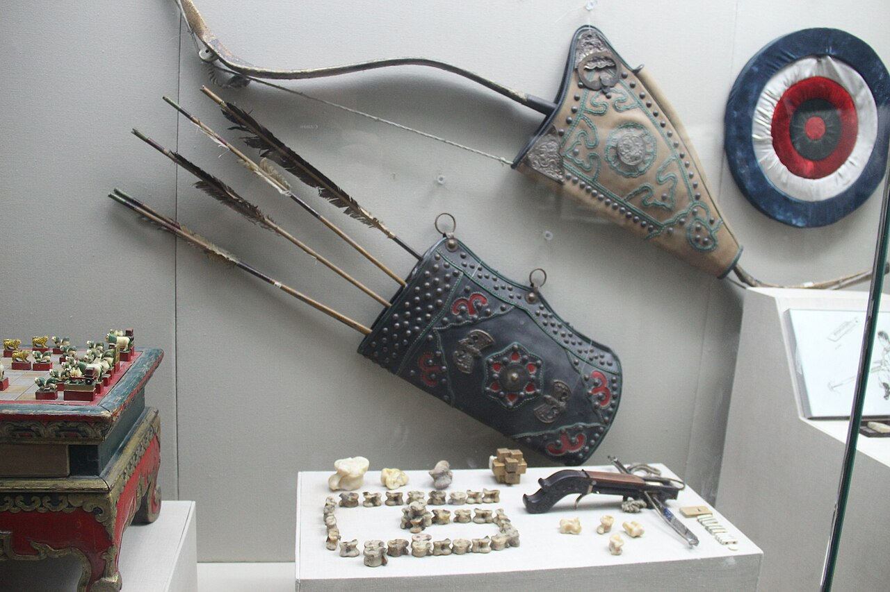
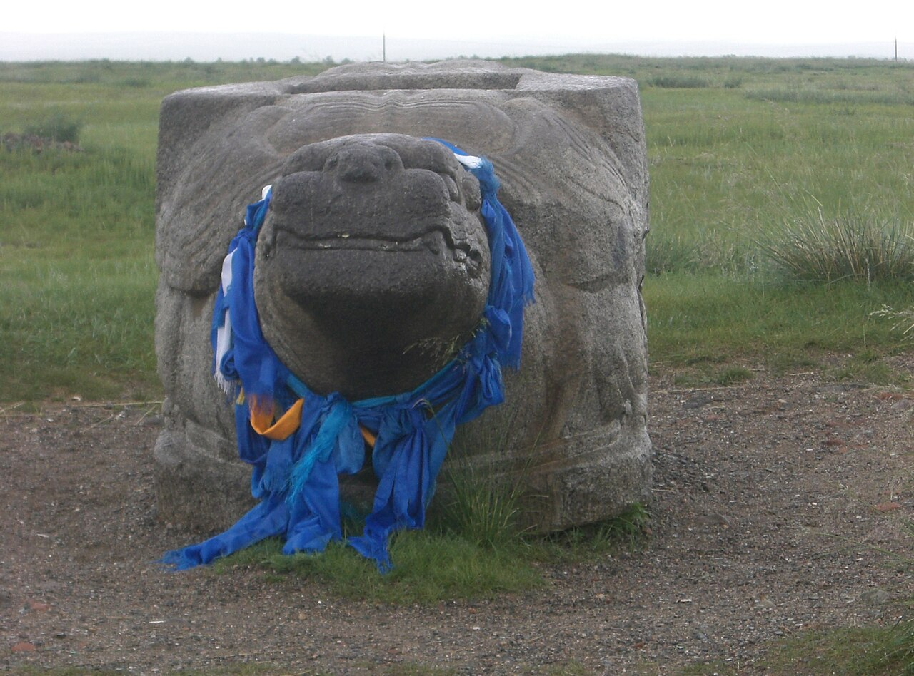
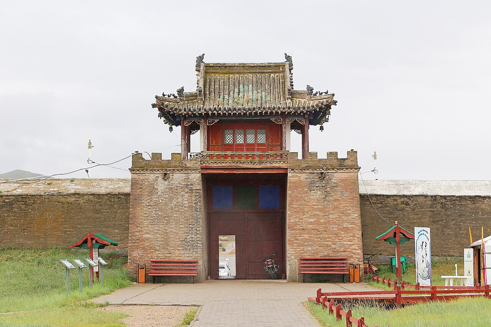
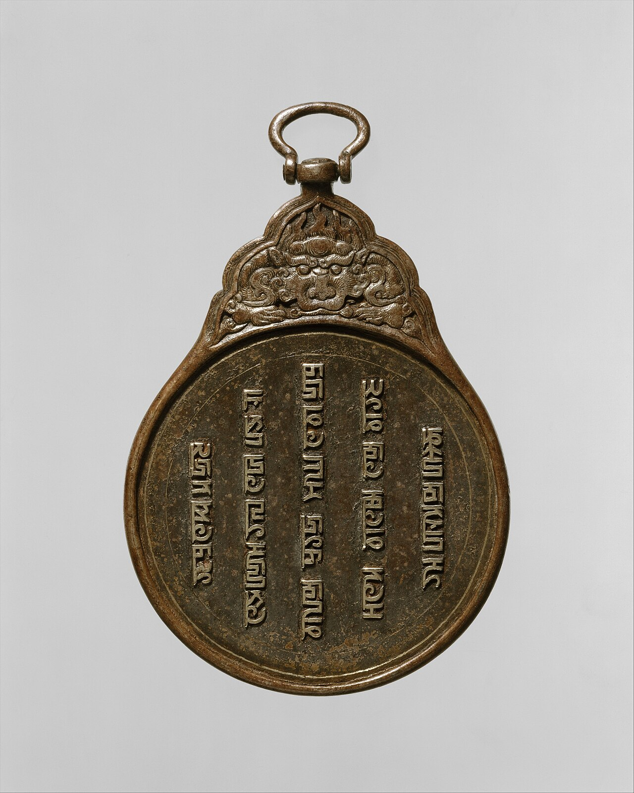
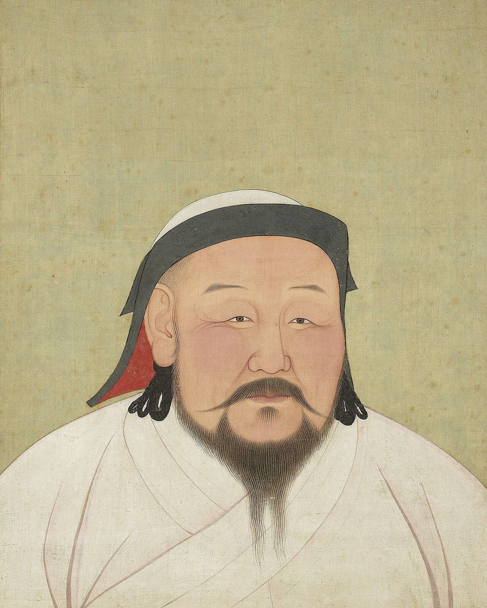
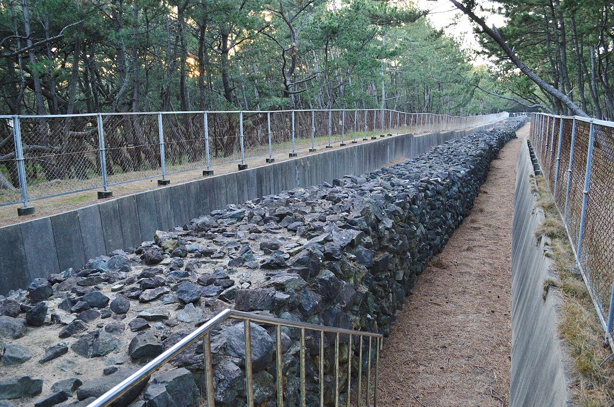

モンゴル高原の草原の町、カラコルム。1254年4月にこの町に入った西ヨーロッパの修道士、ルブルクのギヨームは、城壁の中にイスラム教徒と中国の人々の区画、12の寺、2つのモスク（イスラム教の礼拝所）、キリスト教の教会を見ました。
宮殿の銀の木を作ったのは、奴隷として働かされていたパリ生まれの金細工師でした。50年ほど前まで草原の部族の1つにすぎなかった国が、東西の人々が集まるほどに広がったのです。モンゴル帝国は、なぜあれほど大きくなれたのでしょうか。

草原の部族をまとめた国が、半世紀あまりで東は中国から西はロシアやイランまで広がりました。強さの秘密は馬だけでなく、部族をばらす組み直しと、敵の技や人まで取りこむやり方にもありました。10人ずつの隊のしくみと帝国の広がりを、図と地図で見てみませんか。
前回は、1095年に教皇が呼びかけた十字軍の話でした。罪の赦しという1つの旗の下で、皇帝・教皇・騎士・商人は、それぞれ別の望みを抱いていました。1099年に奪ったエルサレムは1187年にサラーフッディーンに取り返され、1291年にアッコンが落ちて遠征は終わります。
十字軍国家が追いつめられていったころ、東からはモンゴルが迫っていました。
モンゴル高原の草原の町、カラコルム。1254年4月にこの町に入った西ヨーロッパの修道士、ルブルクのギヨームは、城壁の中にイスラム教徒と中国の人々の区画、12の寺、2つのモスク（イスラム教の礼拝所）、キリスト教の教会を見ました。
宮殿の銀の木を作ったのは、奴隷として働かされていたパリ生まれの金細工師でした。50年ほど前まで草原の部族の1つにすぎなかった国が、東西の人々が集まるほどに広がったのです。モンゴル帝国は、なぜあれほど大きくなれたのでしょうか。
部族をばらして組み直し、敵の技と人まで取りこみ続けたから。
はじまりは1206年です。モンゴル高原の東を流れるオノン川の源の近くで、クリルタイと呼ばれる大集会が開かれました。
草原の部族を次々に従えたテムジンという男が、ここで「チンギス・ハン」の称号を名のります。ハンは草原の君主の呼び名です。この称号の意味は、はっきりわかっていません。
それまでの草原では、人は部族ごとにまとまり、部族の長に従っていました。チンギスは、昨日まで敵だった部族も多く抱えていました。そこで、兵を部族ごとにまとめるのをやめ、10人、100人、1,000人の隊に組み直します。1つの隊には、違う部族の出の者が入れられました。

15歳から70歳までの男は、みなどこかの千人隊に入りました。さらに大きな1万人の隊も置かれ、全体が右と左の翼に分けられます。古い部族への忠誠を消し、ハンの任じた隊長に従わせるためのしくみでした。
隊長に選ばれたのは、生まれのよい人ばかりではありませんでした。チンギスが長年の仲間から任じた千人隊の長には、鍛冶屋の息子や大工、羊飼い、そしてかつて敵のたくらみを知らせてくれた2人の牧人までいました。家柄より、働きと忠実さが重んじられたのです。
兵は、1人で3〜4頭の馬を持っていました。乗る馬を替えながら進むので、馬を疲れさせずに、何日も速く動き続けられます。弓は、角と木と動物の腱（すじ）を張り合わせた合成弓です。背には、60本の矢を入れた矢筒を負っていました。
戦い方にも得意な型がありました。散らばった小さな隊が、攻めては退くふりをくり返します。追ってきた敵を本隊から引きはなし、待ちぶせや横からの攻撃で囲みます。

ただ、草原の騎兵は、城壁に囲まれた町を攻めるのが苦手でした。はじめは、不意をつかなければ城壁を越えられません。そこでモンゴルは、征服した国々のイスラム教徒や中国の技術者を、軍に加えていきます。石を飛ばす投石機などを組み立てて動かす人々です。
1221年、いまのイラン北東部の町ニーシャープールを囲んだときには、数千の攻城の機械や弩（いしゆみ）が使われました。軍そのものも、従えた人々でふくらみます。のちにヨーロッパへ向かった軍の兵の7〜8割は、草原のトルコ系の遊牧民だったとみる歴史家もいます。
逆らった町には、きびしい罰がありました。降らずに戦った町では、職人など役に立つ人を除いて、住民の多くが殺されることがよくありました。モンゴルは、その恐ろしさを実際よりも大きく言い広めさせ、次の町が戦わずに降るように仕向けました。
チンギスは1227年に亡くなり、息子のオゴデイが2代目のハンとなります。その軍は1230年代の後半にロシアの町々を攻め、1241年4月にはヨーロッパの中ほどに達しました。9日にいまのポーランドのリーグニッツ（レグニツァ）で、11日にハンガリーのモヒで、相手の軍を破ります。
ところが翌1242年の春、軍は引き返しました。よくいわれる理由は、前年12月にオゴデイが亡くなったことです。ただ、いまの研究者は、それだけが理由ではないと考えています。
1242年の春、ハンガリーの平原は長雨でぬかるみ、馬に食べさせる草も尽きていました。湿気は合成弓も弱めます。石の城にこもる相手には、技術者に頼る攻め方も時間がかかりました。馬と弓の強さは、草原の条件があってこそのものでした。
チンギス自身は、天の神テングリをあがめる草原の信仰を持っていました。それでも、従えた人々の宗教には口を出さず、信仰の自由を認めます。宗教の指導者は、税と公の務めを免じられました。
これは、敵の土地の人々を味方につける力にもなりました。1218年、中央アジアのある国では、イスラム教徒に仏教を押しつけようとしたとされる王が恨まれていました。モンゴルの将軍は信仰の自由を説いて有力者を味方につけ、この国を手に入れました。
文字も、よそから取りこみました。チンギスは、敵の国に仕えていたウイグル人の書記をとらえ、息子たちに文字を教えさせます。このウイグル文字から、帝国のモンゴル文字が生まれました。
冒頭のカラコルムは、オゴデイが1235年に城壁と宮殿を築いた都です。ギヨームの見たモスクや教会は、ほかの信仰を受け入れる、この国のやり方の表れでした。


広い国をつないだのが、ジャムと呼ばれる駅のしくみです。道に沿って、ふつう32〜64kmごとに駅が置かれ、食べ物と寝る場所と替えの馬が用意されていました。使者は駅ごとに馬を乗り継ぎ、1日に200〜300kmを進んだといいます。
駅で馬と決まった食べ物を受け取るには、パイザと呼ばれる札が要りました。格は、金の虎、金、銀、木の4つです。こうした札は、モンゴルより前に中国の北を治めた国々でも使われていました。モンゴルは、そのしくみを帝国じゅうで使いました。

道が安全になると、商人も東西を行き来しました。金の塊を頭にのせた娘がひとりで国じゅうを歩いても安全だった、という言い回しが伝わっています。この時代は「モンゴルの平和（パクス・モンゴリカ）」と呼ばれます。
ヴェネツィアの商人マルコ・ポーロも、1271年に父とおじと東へ旅立ちました。24年後に帰った彼は、ジェノヴァとの戦いでとらえられた牢の中で、旅の話を同じ牢の作家に語ります。その本には、パイザのことも出てきます。
本に長城や茶が出てこないため、中国へ行っていないという説もありますが、地名の多くは確かめられています。
1258年、チンギスの孫フラグの軍は、イスラム世界の中心だったバグダードを囲みました。攻城の機械は数日で城壁を破り、2月10日、カリフ（イスラム教徒の指導者）が降伏します。町は奪われ、カリフは殺されました。イスラムの歴史に残る大きな悲劇とされます。
翌1259年、4代目のハンでフラグの兄のモンケが、中国の南での戦いのさなかに亡くなります。フラグは跡継ぎ選びのため、大軍を連れて東へ引き返しました。シリアには、1万人ほどの隊が残されただけでした。
1260年9月3日、その隊は、いまのイスラエル北部のアイン・ジャールートで、エジプトのマムルーク朝の軍に敗れます。のちに第17話で、十字軍の最後の拠点アッコンを落とす国です。モンゴルの広がりが、初めて大きく止められた戦いでした。
ハンの座をめぐっては、モンケの弟たちが争いました。この内乱のあと、帝国は東の中国の地、ロシアの草原のキプチャク・ハン国、中央アジアのチャガタイ・ハン国、イランのイル・ハン国の4つに分かれ、それぞれが独り立ちした国として動くようになります。
争いに勝ったモンケの弟フビライは1271年、国の名を中国風に「大元」と定め、翌年、いまの北京を都（大都）とします。1279年には第16話の宋を滅ぼし、漢人でない皇帝として初めて中国全体を治めました。紙幣も刷り、儒学者のための学校も建てています。

フビライは、海の向こうの日本にも、従うよう求める手紙を送りました。返事のないまま、1274年と1281年の2度、九州の博多湾に軍を送ります。日本でいう文永の役と弘安の役、あわせて元寇です。
1回目のあと、日本は博多湾の岸に、高さ2mほどの石の壁を築きました。1281年の船団は、朝鮮半島から900隻、中国の南から3,500隻、兵と水夫あわせて14万2,000人という大軍です。中国の南の船は、2年前に滅ぼした宋の土地で集めたものでした。
上陸しようとした軍は石の壁に阻まれ、その夏、湾にとどまっていた船団を大きな台風が襲いました。のちに「神風」と呼ばれる嵐です。征服した国の船と水夫まで使った遠征も、海の上では草原のようにはいきませんでした。

元では1340年代の終わりから、日照りや洪水と飢えが続きました。1351年には紅巾の乱と呼ばれる大きな反乱が起きます。1368年、新しく建った明の軍に敗れた元の皇帝たちは、北のモンゴル高原へ退きました。
ふり返ると、モンゴルを大きくしたのは、馬と弓の速さだけではありません。部族をばらした組み直しに、敵の技術者や文字、宗教、船まで取りこむやり方を重ね、逆らう町には恐れを与え、それを駅の道でつなぎました。けれども国が広がるほど、ハンの一族どうしの争いも大きくなり、帝国は4つに分かれていきました。
1206年の集会で、チンギスが長年の仲間たちに1つずつ任せた千人隊の数Genghis Khan（Wikipedia）による
1206年、1,150人から増やされたハンの親衛隊（ケシク）の人数。のちの将軍を育てる場にもなったGenghis Khan（Wikipedia）による
1241年、ハンが亡くなった知らせが、駅を伝ってヨーロッパ中部の軍に届くまでの期間（3か月以上かかったとみる研究者もいます）Mongol Empire（Wikipedia）による
アイン・ジャールートで、マムルーク朝の軍を率いた将軍の1人がバイバルスです。彼は、黒海の北に広がる草原で生まれたとされる、トルコ系のキプチャク人でした。その草原は、1230年代の後半にモンゴルの軍が攻めこんだ土地です。
バイバルスの一族は、モンゴルの軍を逃れて、ブルガリアへ移ろうとしました。ところが1242年ごろ、ヨーロッパから引き返すモンゴルの軍の一部が、そのブルガリアに攻めこみます。10代だったバイバルスはとらえられ、いまのトルコのシヴァスの奴隷市場で売られました。
彼はシリアのハマー、さらにカイロへと売られ、1247年、エジプトのスルタンのマムルーク（奴隷の兵）となります。マムルーク朝の兵の多くは、同じキプチャク人でした。キプチャク・ハン国の草原から奴隷として次々に売られてくる人々が、その軍を支えていました。
1260年、バイバルスは退くふりをして敵を誘い、スルタンのクトゥズの軍とともに、モンゴルの隊を破りました。モンゴルが得意とした、草原の戦い方です。モンゴルの広がりそのものが、モンゴルを止める兵を生み、育てていたことになります。バイバルスは、この年のうちにスルタンとなりました。
急に大きくなった国や会社のニュースを見たら、その広がりが、どこで次の強い相手を育てているのかを考えてみてください。
モンゴルの時代に東西を行き来したのは、絹や人だけではなかったのかもしれません。1346年、キプチャク・ハン国の軍が、黒海の北の港町カッファ（いまのクリミア半島のフェオドシヤ）を囲むと、陣の中にペストが広がります。
モンゴルの軍が死体を城壁の中へ投げこんで病をうつした、という有名な話もあります。ただ、書き残したのは、その場にいなかった1人だけです。
翌1347年、病はジェノヴァの船とともにコンスタンティノープルやシチリアへ渡りました。ヨーロッパの人口の4分の1から半分ほどを奪ったとされるこの病（黒死病）のあと、なぜルネサンス（古代の学問や芸術をよみがえらせる動き）が花開いたのでしょうか。